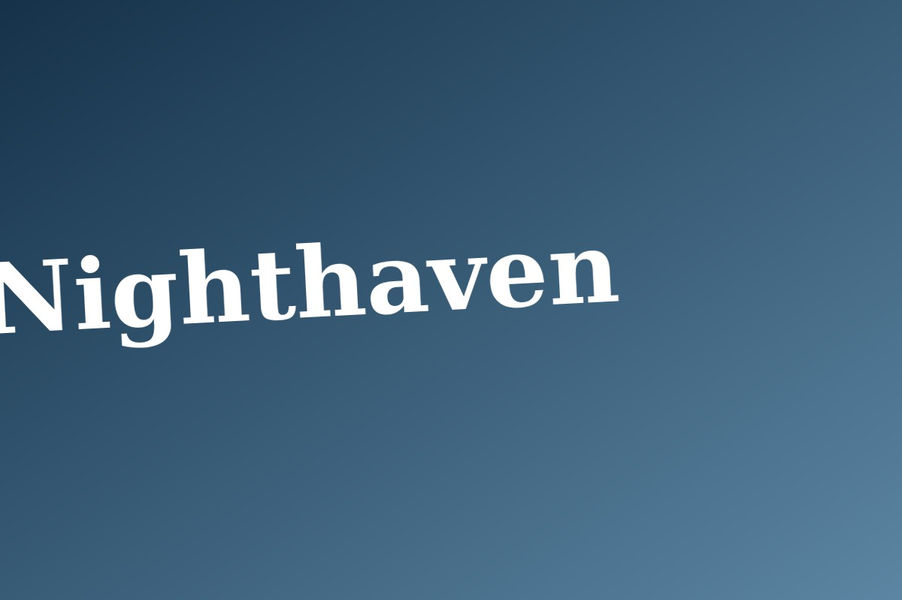

User needs
Portability, insulation, moisture resistance, durability, ease of maintenance and a neutral, dignified appearance became the core requirements.
A portable sleeping system designed around warmth, weather protection, dignity and affordability for people sleeping outdoors in severe cold.
Nighthaven began with a simple product question: what would a sleeping bag look like if it were designed specifically around the realities of sleeping outdoors — limited storage, exposure to moisture, portability, maintenance and the need to feel dignified rather than institutional?
The brief called for a sleeping system that could balance insulation, weather resistance, portability and cost. Research and conversations with NGO workers highlighted practical concerns around carrying, moisture, maintenance and everyday usability.
The design direction therefore treated dignity as a functional requirement, not a decorative layer added at the end.
Portability, insulation, moisture resistance, durability, ease of maintenance and a neutral, dignified appearance became the core requirements.
Waterproof ripstop nylon, PU coating, microfleece, Mylar and several insulation options were considered against warmth, weight and cost.
Mummy, quilted, flap and mobility-oriented concepts explored different balances between coverage, access and movement.
The final direction reduced seams, used a single side zipper, integrated a hood and compressed into a portable roll-up form.
Reduces complexity while keeping entry and exit straightforward.
Extends insulation around the head without adding a separate component.
Supports durability and simplifies production and maintenance.
Makes the product easier to carry, store and distribute.

The explored cost range was approximately ₹700 for a black-cotton version and ₹1,500 for a polyfill version, giving the concept a practical distribution lens rather than treating it as a premium outdoor sleeping bag.
Prototype feedback also surfaced the need for storage compartments and a simpler hood, turning field feedback into concrete design iterations.